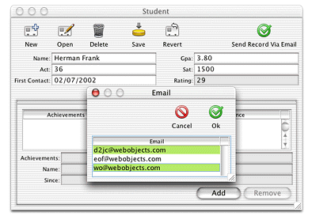

For the custom action that sends a record via email, you may find that hard-coding the email recipients is not ideal. Rather, you might want the flexibility of choosing the recipients on a per-record basis. By using the controller factory programmatically, this is actually quite simple.
First, in respect of the Model-View-Controller paradigm, you need to write a new class to display a dialog in which the user can select the email recipients. Although you could save a few lines of code by putting the controller factory invocation in the business logic class, this is bad design. Business logic classes (enterprise objects) are controller classes and should not include any user interface code. So, add a new client-side class to your project called SelectEmail:
package admissions.client;
import com.webobjects.foundation.*;
import com.webobjects.eocontrol.*;
import com.webobjects.eogeneration.client.*;
public class SelectEmail extends Object{
public SelectEmail() {
super();
}
public NSArray selectEmailAddresses() {
return
EOControllerFactory.sharedControllerFactory().selectWithEntityName
("Email", true, false);
}
}
The class is rather simple and contains a single method that invokes a method on the controller factory. This displays a selection dialog for the Email entity as shown in Figure 5-30.
The second argument in the selectWithEntityName method
(true) allows multiple
selection in the select dialog so you can choose multiple email
addresses. The method returns the objects that are selected in the
selection dialog.
Before you see any email addresses in that dialog, however, you have to add an entity to your EOModel called "Email", generate SQL for it, and add entries to it. The Email entity is considered an Enumeration entity by the rule system, so you can add data to it by selecting Enumeration Window from the Tools menu in the client application.
Next, you need to modify the sendRecordViaEmail action
method in CustomFormController.java as
shown:
public void sendRecordViaEmail() {
SelectEmail select = new SelectEmail();
NSArray globalIDs = select.selectEmailAddresses();
_distributedObjectStore().invokeRemoteMethodWithKeyPath(new
EOEditingContext(),"session", "clientSideRequestSendRecordViaEmail", new
Class[] {EOEnterpriseObject.class, NSArray.class}, new Object[]
{selectedObject(), globalIDs}, true);
}
These modifications to CustomFormController.java instantiate
a new SelectEmail object and invoke the method to display the dialog
that allows users to select the email addresses to send the current
report to.
The remote method invocation now sends the selected email
address (represented by the globalIDs object)
and the report from which the sendRecordViaEmail action
was invoked (represented by the objects returned from the selectedObject() method
in the remote method invocation) to the method clientSideRequestSendRecordViaEmail in
the Session.java class
on the server.
Next, you need to modify the clientSideRequestSendRecordViaEmail method
in the server-side Session.java class
to accept the new globalIDs argument:
public void clientSideRequestSendRecordViaEmail(EOEnterpriseObject record, NSArray
sendTo) {
String messageSubject, messageBody, message;
NSMutableArray recipients = new NSMutableArray();
//recipients.addObject("person@foo.com");
java.util.Enumeration e = sendTo.objectEnumerator();
while (e.hasMoreElements()) {
EOEnterpriseObject email =
defaultEditingContext().objectForGlobalID((EOGlobalID)e.nextElement());
String emailAddress = (String)email.valueForKey("email");
recipients.addObject(emailAddress);
}
Report report = new Report(context());
report.setStudent(record);
messageSubject = "Student report for " + record.valueForKey("name");
message =
WOMailDelivery.sharedInstance().composeComponentEmail("sender@foo.com",
recipients, null, messageSubject, report, true);
}
Instead of statically setting the array recipients, the array
is set dynamically to the email addresses passed in by the sendTo array.
Build and run the application. Open a student record and click Send Record Via Email. A dialog like the that shown in Figure 5-30 should appear. Select some email addresses and click Ok. Check your email to see if you are successful.
Figure 5-30 Choose email recipients
